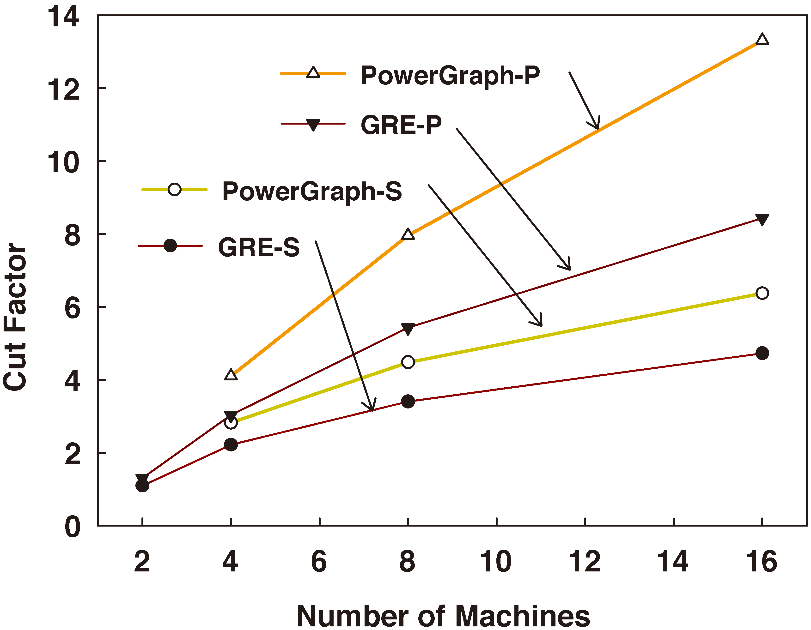

Graph Partitioning
Essentials of GRE are its abstractoons on graph-parallel computation and distributed graph representation.
Comparison of distributed graph models
Tradional Graph model
Agent-Graph Model
Vertex-Cut graph model
Present something here!
Quality of Agent-Graph Partitioing on Real Graphs
Quality of Graph Partitioning: Agent-Graph VS Vertex-Cut
Compared to the vertex-cut method in PowerGraph, GRE's Agent-Graph shows obvious advantage on partitioning quality under the same greedy heuristics. To illustrate this point, we take two real-wolrd graphs, Twitter (social network) and SK-2007 (web graphs), as examples. The following figures show the results of both agent-graph(GER-S/P) and vertex-cut(PowerGraph-S/P).

Twitter socoal graph
SK-2007 web graph